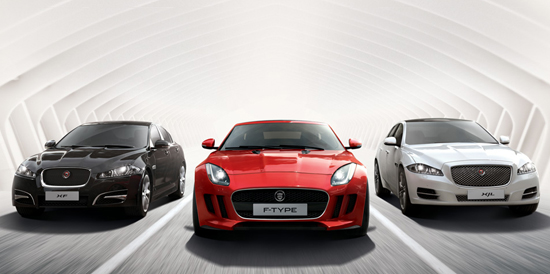
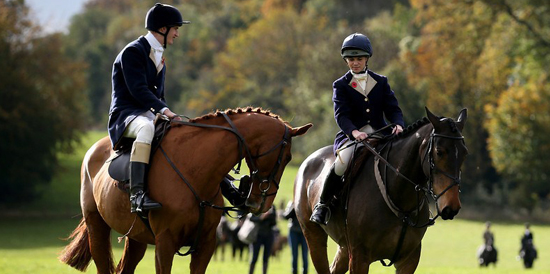
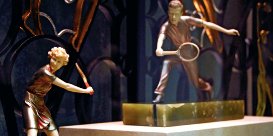
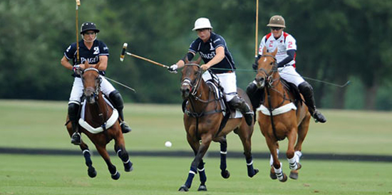
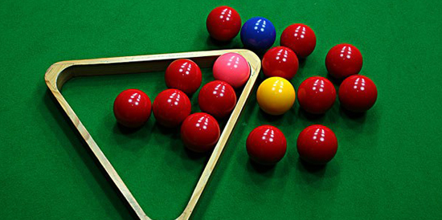

骑车畅行Cycling
随着越来越多自行车的出现，伦敦的骑行文化逐渐得到发展，也让这座城市走进了骑车探索的时尚行列；伦敦市长鲍里斯·约翰逊在去年7月启动了伦敦的自行车租赁计划，旨在为市民提供公共交通以外的更加低碳的出行方式，共有三百多个自行车站和5000—6000辆自行车投入到这项计划当中。参加这项计划的市民和游客可以以低廉的价格在伦敦街头租用自行车，每次使用的前30分钟还是免费的。难怪乎，伦敦的诸多白领们舍弃豪车，开始骑着两个轮子上下班了！在伦敦骑自行车或许会永久性地改变你对这个城市的看法。
捷豹总部和测试赛道Jaguar Proving Ground
参观捷豹总部，与捷豹设计师面对面，深入了解捷豹设计精髓。在测试赛道上驾驶捷豹XF飞驰，体验速度与激情，感受世界顶尖制车技术的魅力。
马术运动Equestrian sport
马术是英国的传统体育活动，历史悠久。在英国旅行，不妨去体验一次骑马，在郊野、在海滩、在山区、在公园，和纯种英国马一起体验英伦文化，享受踏花归来马蹄香的感觉。在马背上体验英伦文化，亲身体验策马奔腾与开着捷豹XF风驰电掣相同的快感。
猎狐Fox Sports
英国王室贵族最热衷的运动是猎狐，虽然这项运动的起源也是老百姓为了保护自己的庄稼而消灭狐狸。猎狐运动在英国已经有300年的历史，斯图亚特王朝时期开始流行于王公贵族之间，他们通过猎狐这项“为人民服务”的活动来炫耀地位与财富，展示优越感，它已经成为不列颠文化的一部分。由于“动物保护风潮”的日益盛行，当年的“血腥杀戮”，如今仅仅只是“追逐的乐趣”，这也是我们想要向观众传达的正面、积极的动物保护观念。
历史悠久的温网The Championships, Wimbledon
温布尔登网球锦标赛（The Championships,Wimbledon）始于1877年，是网球运动中历史最长和最具声望的公开赛。锦标赛通常举办于6月或7月，是每年度网球大满贯的第三项赛事，排在澳大利亚公开赛和法国公开赛之后，美国公开赛之前。温网是大满贯赛事中唯一使用草地球场的，整个赛事通常历时两周，但会因雨延时。男子单打、女子单打、男子双打、女子双打和男女混合双打比赛在不同场地同时进行。温布尔登还举办有男子单打、女子单打、男子双打、女子双打的青年比赛；此外还为退役球员举办特别邀请赛。
马球Polo
在英国，马球是一项贵族体育运动，参加马球赛的人都需要有很高的骑术，马球用良种马，其喂养、训练也不是少量资金能做到的。因此，马球通常是王室贵族们的挚爱运动，最著名的粉丝就包括王储查尔斯及其两位王子。汉姆马球俱乐部（Ham Polo Club）位于伦敦西南，距海德公园8英里，建于1926年，是目前伦敦市内仅存的马球俱乐部，在那里你能观赏到这项充满激情的贵族运动。而在赫灵汉姆公园举行的Mint Polo in the Park被视为伦敦首要的马球活动，每年6月会有六队国际马球队在充满马术乐趣的三天里一较高下。
斯诺克：高雅的酣战Snooker
在英国，斯诺克是仅次于足球拥有第二多电视观众的运动。1885年，当时的英国英式台球冠军约翰·罗伯特（John Roberts）在印度旅行时见到了张伯伦，从他那里知道了“斯诺克”这种新玩法。回国后，罗伯特就把斯诺克台球带回到英格兰。但是，当时正处于英式台球热，斯诺克台球并没有引起人们足够的重视。直到20世纪30年代，英式台球日渐衰落，许多名手才逐渐转向斯诺克台球。这其中包括斯诺克的传奇人物乔·戴维斯（Joe Davis）。他通过良好的意识和精湛的杆法控制主球的走位，大大提高了斯诺克运动的水平，从此斯诺克开始在英国兴盛起来，并流行到世界各地。